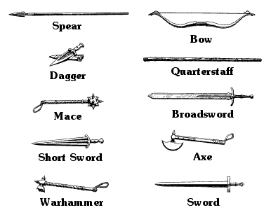

Magnakai Disciplines
During your training as a Kai Lord, and in the course of the adventures that led to the discovery of The Book of the Magnakai, you have mastered all ten of the basic warrior skills known as the Kai Disciplines.
After studying The Book of the Magnakai, you have also reached the rank of Kai Master Superior, which means that you have learnt three of the Magnakai Disciplines listed below. It is up to you to choose which three skills these are. As all of the Magnakai Disciplines may be of use to you at some point on your adventure, pick your three with care. The correct use of a Magnakai Discipline at the right time can save your life.
The Magnakai skills are divided into groups, each of which is governed by a separate school of training. These groups are called ‘Lore-circles’. By mastering all of the Magnakai Disciplines in a particular Lore-circle, you can gain an increase in your COMBAT SKILL and ENDURANCE points score. (See the section ‘Lore-circles of the Magnakai’ for details of these bonuses.)
When you have chosen your three Magnakai Disciplines, enter them in the Magnakai Disciplines section of your Action Chart.
Weaponmastery
This Magnakai Discipline enables a Kai Master to become proficient in the use of all types of weapon. When you enter combat with a weapon you have mastered, you add 3 points to your COMBAT SKILL. If you have the Magnakai Discipline of Weaponmastery with Bow, you may add 3 to any number that you choose from the Random Number Table, when using the Bow. The rank of Kai Master Superior, with which you begin the Magnakai series, means you are skilled in three of the weapons in the list below.
{kind=link}

The fact that you are skilled with three Weapons does not mean that you begin the adventure carrying any of them. However, you will have opportunities to acquire Weapons during your adventure. For every Lone Wolf book that you complete in the Magnakai series, you may add an additional Weapon to your Weaponmastery Checklist.
If you choose this skill, write ‘Weaponmastery: +3 COMBAT SKILL points’ on your Action Chart, and tick your chosen weapons on the Weapons List. You cannot carry more than two Weapons.
Animal Control
This Magnakai Discipline enables a Kai Master to communicate with most animals and to determine their purpose and intentions. It also enables a Kai Master to fight from the saddle with great advantage.
If you choose this skill, write ‘Animal Control’ on your Action Chart.
Curing
The possessor of this skill can restore 1 lost ENDURANCE point to his total for every numbered section of the book through which he passes, provided he is not involved in combat. (This can only be done after his ENDURANCE has fallen below its original level.) This Magnakai Discipline also enables a Kai Master to cure disease, blindness, and any combat wounds sustained by others, as well as himself. Using the knowledge that mastery of this skill provides will also allow a Kai Master to identify the properties of any herbs, roots, and potions that may be encountered during the adventure.
If you choose this skill, write ‘Curing: +1 ENDURANCE point for each section without combat’ on your Action Chart.
Invisibility
This Magnakai skill allows a Kai Master to blend in with his surroundings, even in the most exposed terrain. It will enable him to mask his body heat and scent, and to adopt the dialect and mannerisms of any town or city that he visits.
If you choose this skill, write ‘Invisibility’ on your Action Chart.
Huntmastery
This skill ensures that a Kai Master will never starve in the wild; he will always be able to hunt for food, even in areas of wasteland and desert. It also enables a Kai Master to move with great speed and dexterity and will allow him to ignore any extra loss of COMBAT SKILL points due to a surprise attack or ambush.
If you choose this skill, write ‘Huntmastery’ on your Action Chart.
Pathsmanship
In addition to the basic skill of being able to recognize the correct path in unknown territory, the Magnakai skill of Pathsmanship will enable a Kai Master to read foreign languages, decipher symbols, read footprints and tracks (even if they have been disturbed), and detect the presence of most traps. It also grants him the gift of always knowing intuitively the position of north.
If you choose this skill, write ‘Pathsmanship’ on your Action Chart.
Psi-surge
This psychic skill enables a Kai Master to attack an enemy using the force of his mind. It can be used as well as normal combat weapons and adds 4 extra points to your COMBAT SKILL.
It is a powerful Discipline, but it is also a costly one. For every round of combat in which you use Psi-surge, you must deduct 2 ENDURANCE points. A weaker form of Psi-surge called Mindblast can be used against an enemy without losing any ENDURANCE points, but it will add only 2 extra points to your COMBAT SKILL. (Psi-surge and Mindblast cannot be used simultaneously.) Psi-surge cannot be used if your ENDURANCE falls to 6 points or below, and not all of the creatures encountered on your adventure will be affected by it; you will be told if a creature is immune.
If you choose this skill, write ‘Psi-surge: +4 COMBAT SKILL points but −2 ENDURANCE points per round’ and ‘Mindblast: +2 COMBAT SKILL points’ on your Action Chart.
Psi-screen
Many of the hostile creatures that inhabit Magnamund have the ability to attack you using their Mindforce. The Magnakai Discipline of Psi-screen prevents you from losing any ENDURANCE points when subjected to this form of attack and greatly increases your defence against supernatural illusions and hypnosis.
If you choose this skill, write ‘Psi-screen: no points lost when attacked by Mindforce’ on your Action Chart.
Nexus
Mastery of this Magnakai skill will enable you to withstand extremes of heat and cold without losing ENDURANCE points and to move items by your powers of concentration alone.
If you choose this skill, write ‘Nexus’ on your Action Chart.
Divination
This skill may warn a Kai Master of imminent or unseen danger or enable him to detect an invisible or hidden enemy. It may also reveal the true purpose or intent of a stranger or strange object encountered in your adventure. Divination may enable you to communicate telepathically with another person and to sense if a creature possesses psychic abilities.
If you choose this skill, write ‘Divination’ on your Action Chart.
If you successfully complete the mission as set in Book 11 of the Lone Wolf series, you may add a further Magnakai Discipline of your choice to your Action Chart in Book 12. This additional skill, together with your other Magnakai skills and any Special Items that you have found and been able to keep during your adventures may then be used in the next adventure in the Lone Wolf Magnakai series, which is called The Masters of Darkness .